Using QR codes or an alternate approach, BeGR is an interactive application to be deployed on a smart device (tablet, mobile phone, watch, fridge, TV, vehicle, etc.) able to recommend best products – considering quality, price, various restrictions,... – for a set of desired goodies, including several information of interest: characteristics, price, geographic availability, risk factors, etc. The application will also recommend products/services on the basis of the user's social graph (his/her "friends" on a social network).
In our modern world, a lot of money are being spent inefficiently on products at a price higher than one could find with a bit of research. Unfortunately, not everyone is capable or even has the time to do said research, so this problem is being overlooked most of the time, people usually viewing this fact as an unavoidable cost. While this might be overlooked by some people as a trivial waste of money, other people really cannot overlook it, and for those people, we have a solution:
No more will you have to waste money on tings you could have bought at a sigificantly lower cost. No longer will you have to ponder about the higher cost of groceries and even appliances that seems higher and higher with each passing day. We even have a sollution for the times when you will have money to spare and you will wish for a higher grade of products to spend your money on! We present you BeGR - Best Goods Recommender.
Our objective is clear: to provide to our customers the best place for buying their desired products. How do we do that? well, all you have to do is enter some filters regarding some characteristics of your products like price, quality or even the stores you wish to buy from, and we will provide you with a few results that we think they fit best to your request.
Now, with the help of our app, you can breathe easy knowing that our app will find you the best prices for the best products your money can buy!!! You can now browse our app, and find what you need with minimal effort, at the best price!! Be it a poor person holding dearly on their hard earned money, or a rich person trying to find the most high-grade piece of steak money can buy, or who cares, even normal people trying to get the most of their money can benefit off of our app. All you have to do is make an account and get to searching.
What are you waiting for ??!?!?! Get Started!!!
Unless already logged in, you will start at our startPage, where you will be presented with 2 options: Log In or Sign In.
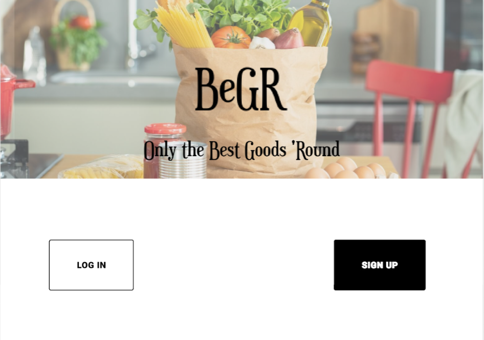If you chose to Log In then you will be met with the following page, which will ask you to insert your login data, so you would be able to use our application to the best of its ability. you may also choose to log in using your Facebook account or Google account. you may also choose the Sign In option, in case you wish to make a whole new account.
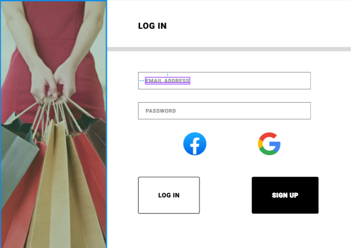If you chose to Sign Upthen you will be met with this beautiful page, where you can create a new account that will allow you to use our wonderful app. To do so, you will have to enter a username, an email address, a password you will choose as a way to keep your precious data safe, and, optionally, a phone number that could be held as an alias of your email address. You can also choose to use the credentials of a facebook/gmail account you own, but you will still have to choose a password. You may also choose the option to Log In if by any chance you allready have an account you wish to use. A succesful Sign Up will redirect you towards the Log In page.
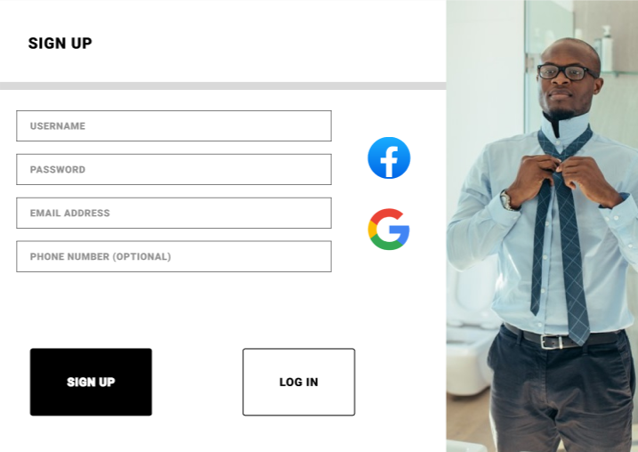Once logged in, you will be redirected towards the Main Page. Here you will observe "Today's Big Offers", specifically hand picked by us just for you based on your previous searches if you had any( after all, we steal your data, we might as well give you some benefits while we're at it). Here you may choose to serach for certain products using all the various filters we've left at your disposal, you might be interested in a certain product you saw allready listed and click on it to see more details with regards to it (on our productPage), or, maybe, unlikely so, you might not have found what you were looking for among the products we've allready listed for you, and you might choose to request more results for your query.
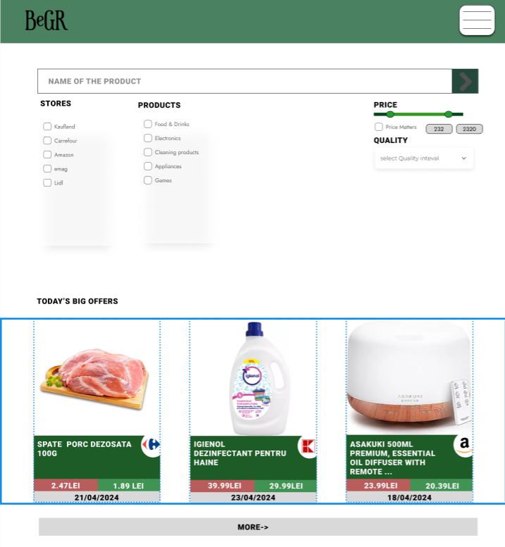On the "product Page" you will see along other details of the product you might have allready seen on the Main Page, a link from where we got the data for your product, and also a few other products that might resemble the product you're currently viewing (IF we managed to find such exquisite products worthy only of you).
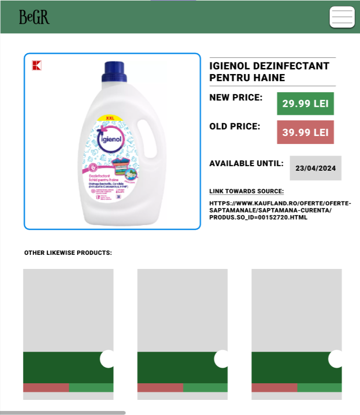I am not sure where to place this kind of information, so i might as well place it here! on the navigation bar, that green strip at the top of every page from now on, you might see our logo, and a white button with 3 black stripes. Clicking on the logo will redirect you towards the Main Page, while the white button (or the "settings button" if you will allow me to call it that) will open an overlay, where you can either Log Off which will redirect you towards the "starting" Page, or choose to Change Account Settings, which will redirect you towards the "Account Details" Page.
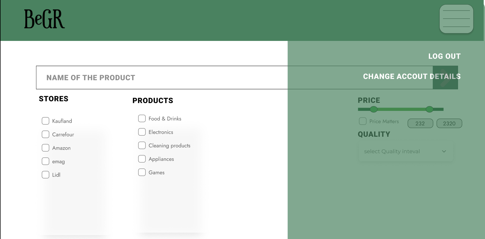While on the "Account Details Page", you can change the credentials of your account, everything from username or password, to the various Email addresses or Phone numbers you trust. We also leave you the option (such a useless thing, i know) to delete your account, if you ever lose a bet and you have such horrendous friends to even suggest that.
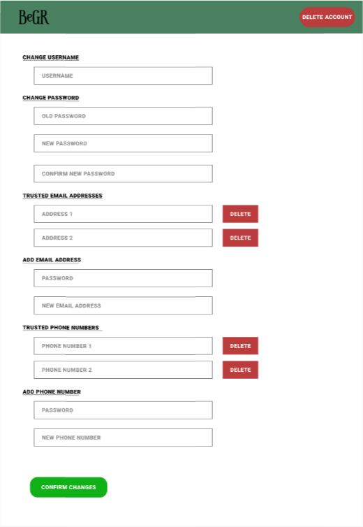The user has 2 option Log In and Sign In.
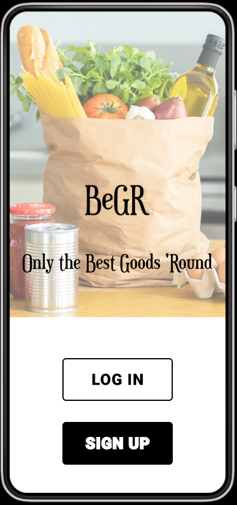If you chose to Log In similar to the web app then you will be met with the following page, which will ask you to insert your login data, so you would be able to use our application to the best of its ability. you may also choose to log in using your Facebook account or Google account. you may also choose the Sign In option, in case you wish to make a whole new account.
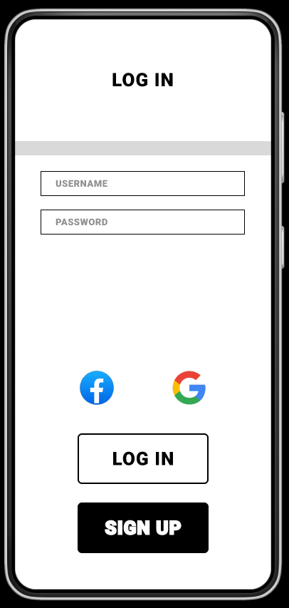If you chose to Sign Up we will be needing some data in order to fully register you in to the app and enjoy BeGR therefore we will be needing: username, an email address, a password, and optionally, a phone number that could be held as an alias of your email address. You can also login using facebook/gmail
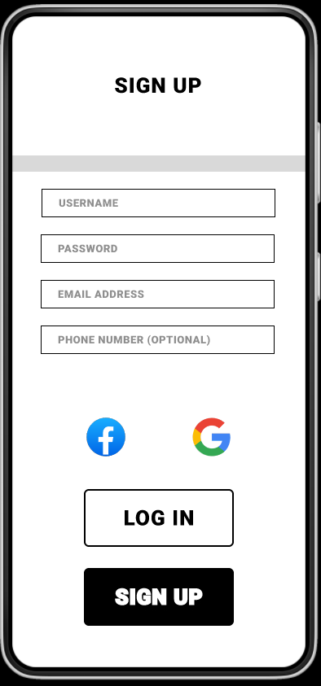"Today's Big Offers" shown in the main page, specifically hand picked by us just for you based on your previous searches if you had any. Here you may search the products that you want using search keywords and applying filters.
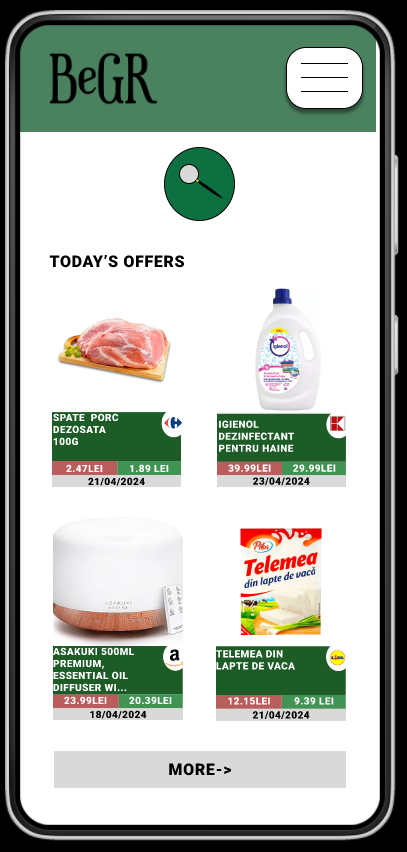By pressing search button you can alse choose to filter by rating, price, name of the store or general types of products.
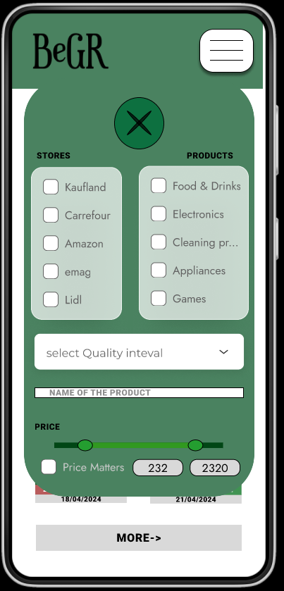On the "product Page" you will see along other details of the product you might have allready seen on the Main Page, a link from where we got the data for your product, and also a few other products that might resemble the product you're currently viewing.
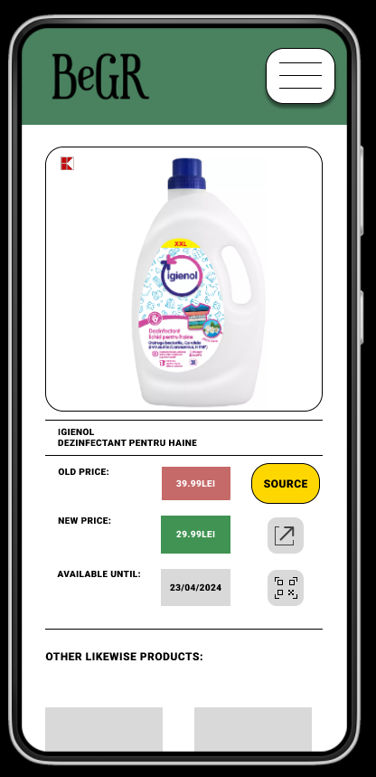On the menu bar you will have 3 options: "Log out", "Account settings" and "Qr code".
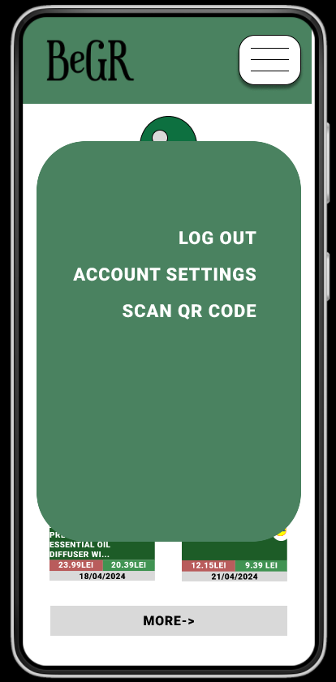On that page you can scan qr codes in order to find your desired product to comapare prices or to get a list of products queried before.
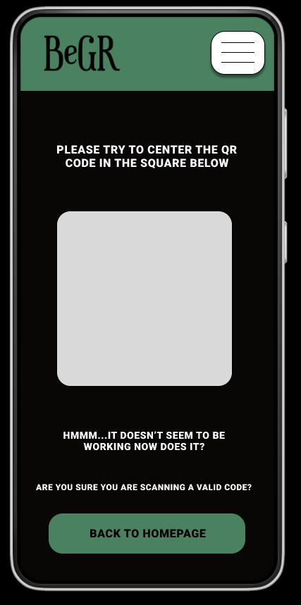While on the "Account Settings Page", you can change the credentials of your account, everything from username or password, to the various Email addresses or Phone numbers you trust. We also leave you the option (such a useless thing, i know) to delete your account, if you ever lose a bet and you have such horrendous friends to even suggest that.
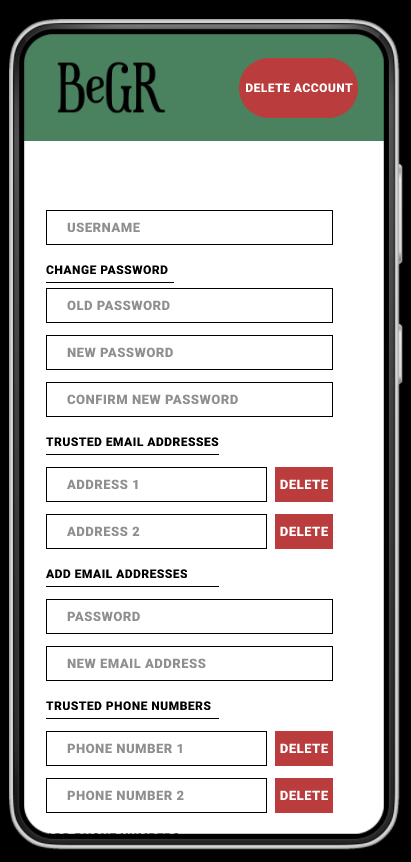